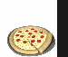

De: La Frikipedia, la enciclopedia extremadamente seria.
De: La Frikipedia, la enciclopedia extremadamente seria. De: La Frikipedia, la enciclopedia extremadamente seria.
| De la serie empresas malignas: | ||
| ¿Quien toca? Fraid Txiquen | ||
|
| ||
| Perteneciente al grupo: | Avias Mortus | |
| Se dedica a: | Los pollos | |
| País de origen: | Estados Unidos | |
| Año de fundación: | En los años dorados del Sur eslavista | |
| Super Presidente: | El Coronel Sanders / Buckethead | |
| Nivel de maldad: | Sólo para con los Pollos... y algunos wombats | |
| Empresas absorbidas: | Un tierno restauransito familiar manejado por un coronel bonachon que se convirtio en esto | |
| Número de empleados: | Menos que con el Ronald | |
| Atentados contra la humanidad | La receta secreta | |
| ¿Se aconseja trabajar aquí? | Puedes comer del pure de papa gratis | |
| ¿Se recomienda el boicot? | Sólo si eres un vegetariano, en cuyo caso te pediremos que abandones esta web | |
| Cantidad de denuncias: | Normal para una empresa Estadounidense | |
| Sitio web: | Página oficial de ¿Quien toca? Fraid Txiquen | |
Kentuky Fried Chicken es un restaurante creado por el Coronel Sanders (pedófilo tradicional de Kentucky) quien descubrió la receta secreta de como hacer el pollo crujiente y suave, mediante varias hormonas (que causan obesidad aviar). Ahí es donde se fabrica la comida favorita de los negros, el pollo frito.
El ideal KFC corporation se inició en 1856 en el que un tal Coronel Sanders de Kentucky cuyo objetivo era atraer niños decidió empezar un negocio de comida frita. Urgido por tirarse a uno cuantos niños rápidamente tomo un pollo con polio y lo mató. (no sin antes haberlo violado repetidamente. De ahí viene la polio) Lo cocinó con la receta tradicional del pollo frito pero para que fuera mas crujiente agrego pedazos de vidrio y un poco de arena para gatos, fue al centro del pueblo y el pollo frito agrado a la clientela. Ya se había empezado a vender patas de pollo fritas a un precio razonable de dos dólares por pata y las patas de pollo de Sanders eran las más famosas de todo Kentucky.
Para 1863, la guerra civil yanki había alejado a los nuños de su negocio por eso decidio alimentar a los jovenes fornidos del ejército confederado. Lo conocían como el Cne patita de pollo y el le encantaba que le comieran la patita de pollo tantos soldados muertos de hambre.
Al ver que la guerra se perdía día a día decidió esconder la receta de los antiesclavistas de la unión y no se volvió a hablar más de ella hasta 1910.
En 1910 Sanders nota nuevas formas de esclavizar a la gente mediante horas extras y aportes jubilatorios lo cual le dio nueva fuerza a su negocio mediante la utilizacíon de niños que frieran las patitas de pollo las 24 horas del día y la estimulación anal de los gatos para mejorar sus productos. Tanto esfuerzo y dedicación darían sus frutos al abrir su primer tienda de pollo frito en Lincoln Kentucky dos años más tarde.
Posteriormente, el 25 de febrero de 1920, gracias al flautista de hammeling, modifico ratas geneticamente, dejando así de utilizar niños, para lograr el crecimiento de pluma larga en el ano pero su experimento fue fallido y las plumas aparecieron en todo el cuerpo menos el ocico y el ano (de donde provienen generalmente los nugues y las chiken pops el queso de dominos pizza entre otras cosas), formando una exitosa compañia de pollos y reparticion de putas en menos de 30 minutos.
La crisis del treinta hace que todos los negocios se fundan menos el de Sanders que todavía tenía el soporte de las plantaciones esclavistas de au padre con la cual pudo salir adelante. Lugo promovería el Ku Klux Klan porque no le gustaban los niños de raza mas bien eran una aberración para él.
Con la ocupación yanqui al Japón empieza el dominio de Asia y utilizaría el anime y el ultranazismo japones para atraer a las familias asiáticas a su cadena recien fundada Tuvo que esperar a que las tropas americnas pudieran alisar el terreno para que se estableciera la cadena en los países musulmanes. En Israel no hubo problema lo único que debía hacerse era poner cocina kosher y poner a los árabes a trabajar los sábados porque para un judío trabajar un sábado es la muerte.
Proceso de elaboración: Se extrae la piel de anal del pollo en vez del muslo para darle al crujipollo su mas fino toque ademas de la receta secreta que es guano de murcielago que ellos mismos crían. Se le dan un bañada con arena de gato usada como reemplazo al pan rayado porque es más rentable y por último se le hecha un químico especial formado con semen de huachmingo y orina de ornitorrinco, abundantes en Kentucky hasta que Sanders los mato a todos, sin embargo, el pure de papa esta rico.
KFC son las siglas de 'Kentucky Fried Chicken' (lo que en español sería "Pollo Frito de Kentucky"). Esto es sólo para encubrir su nombre real Kentucky Fuck Children (que en español seria Kentucky Jode Niños). Tambien es conocido como 'Kill the Fucking Chicken' o 'Kick from Chuck'. Éste ultimo es el más utilizado.

Lo siguientes efectos pueden o no presentarse (los abogados me hicieron poner el remarcado) tras la feliz ingesta periódica de los alimentos de dicha marca. Por orden de peligrosidad:
 Empresas Empresas 
|
|---|
|
Bimbo $ Burger King $ Coca-Cola $ Duff $ Empresas pesqueras de Osaka $ KFC $ McDonald's $ Nocilla $ Oscar Mayer $ Pepsi $ Pizza Hut $ Starbucks 4Kids $ Air Madrid $ Audioskan $ Blizzard $ Compañía de tranvías da Coruña $ Correos $ Diario AS $ Diario GOL $ Discográfica $ El jueves $ Ikariam $ Marca $ Mundo Deportivo $ Playboy $ Vale Music $ Vitrasa CNN $ Canal Sur $ La 2 $ Luar $ Telerisa $ TV Azteca $ TVE $ Studio Basura $ Teleahinco $ Paka Paka $ Discovery Kids $ Disney XD $ Cuatroº ACME $ Agfa $ Akatsuki $ Bic $ BMW $ Bosque verde $ CLAMP $ Copyleft $ Godbusters $ ETT $ El MAL $ Fisher Price $ Ford $ Greenpeace $ Hombres de negro $ Horóscopo $ Hunosa $ Iglesia maradoniana $ KIEP $ Lego $ Mapfre $ MCC $ Oficina $ Organización XIII $ PDVSA $ RMC $ Ryanair $ Sanrio $ SWAT $ Umbrella $ VolBaguen $ WDC |
 Alimentos 
|
|---|
| Arroz con leche • Asado • Atún • Atún claro calvo • Bizcocho • Boomer • Chicle • Chocolate • Chorizo • Choripán • Choripavo • Cruasán • Flan • Galleta • Galleta danesa • Gominola • Granola • Hamburguesa • Hot dog • Huevo Kinder • Jamón serrano • Kebab • Lacasito •Pan • Pan Bimbo • Pan con tomate • Pizza • Pizza de piña • Pseudocarne • Queso • Queso rallado • Queso suizo • Repollo • Salsa de soja • Sugus • Taco • Taco gringo • Tamal • Tapa • Tetra • Torta • Tortilla • Tortilla de patata • Tostacos • Waffles |
| Burger King ♦ Kentucky Fried Chicken ♦ La Pasiva ♦ McDonald's ♦ Pizza Hut ♦ Telepizza |
Autor(es):